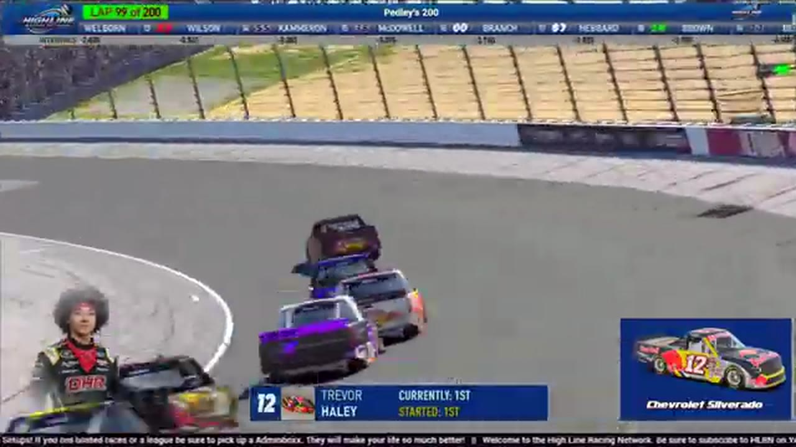

Trevor Haley
Darkhorse Racing
THE CHAMPION AT THE CENTER OF THE STORM
- Official files
- 20
- Central editions
- 17
- Exact tape cues
- 108
- Accepted podiums
- 6
Trevor Haley is the central long-form figure of HLRN Season 1: the champion identified by the network's later recap, a repeat stage scorer, and the driver whose apparent finale victory was removed by HLRN's below-line and contact ruling. HLRN materials currently associate the file with Darkhorse Racing. The currently indexed source window runs from November 17, 2025 through July 20, 2026.
The recovered podium ledger places Haley second at Watkins Glen and second again in Season 2 at Iowa. His official tape footprint spans 20 race files and 17 Central editions, with 108 direct primary-broadcast jump points. The densest direct-tape categories are restart (22 cues) and strategy (16 cues). Those counts describe where the name is easiest to find; they are not fault, pace, or performance grades. A source-attributed car frame is published with its original video and timestamp. That is the current discovery map for Trevor Haley.
The dossier keeps the tension intact: stage and championship strength, no surviving feature P1, a finale result that changes after review, and a title that remains supported by its own separate channel receipt. Separately, 16 Highline Live files sit on the bonus shelf and never enter the official season ledger. The displayed name is labeled transcript normalized; that status remains visible so an owner roster can strengthen or correct the identity without rewriting the evidence trail. Those boundaries define Trevor Haley's public HLRN file.
10 featured race-tape cues
These are discovery routes into complete HLRN broadcasts, not performance grades or inferred results.
- S2 / R2 · RESULT
Nick Bowman is confirmed atop the Iowa results
Nick Bowman takes the checkered after the final restart. The on-screen readout then lists Trevor Haley second and Cory Cook third after Iowa's caution-heavy night.
Iowa - S1 / R11 · RESULT
Nick Bowman is confirmed atop the Charlotte Roval results
The primary Charlotte Roval results record Nick Bowman first, Trevor Haley second, and Jacob Brown third after Bowman's sweep of pole, fastest lap, laps led, the stage, and the win.
Charlotte Roval - S1 / R10 · RESULT
Cory Cook is confirmed atop the Kansas results
The primary Kansas results and interviews record Cory Cook first, Brandon Bikey second, and Trevor Haley third.
Kansas - S1 / R9 · RESULT
Juan Escamilla is confirmed atop the Chicagoland results
The Chicagoland results readout lists Juan Escamilla first and Trevor Haley third. The P2 driver then enters the booth under the scoring-name rendering 'Stewart,' self-identifies as Joe Quan, and is repeatedly congratulated for second place.
Chicagoland - S1 / R4 · RESULT
Juan Escamilla is confirmed atop the iRacing Superspeedway results
The iRacing Superspeedway broadcast's closing readout records Juan Escamilla first, Trevor Haley second, and Randy Showers third.
iRacing Superspeedway - S2 / R2 · FINISH
Nick Bowman crosses ahead of Trevor Haley at Iowa
The final Iowa restart resolves with Nick Bowman reaching the checkered ahead of Trevor Haley. The cut stays with the live finish call and its immediate aftermath on the primary tape.
Iowa - S1 / R16 · FINISH
Trevor Haley enters the final-lap decision
S1 / R16 at 2:26:06: The white flag opens the final-lap decision at Talladega, with Trevor Haley named in the decisive group. The cut continues through the immediate finish call on the full primary broadcast.
Talladega - S1 / R16 · FINISH
Trevor Haley clears Talladega's final-lap wreck and crosses first
Nick Bowman is turned while making the final-lap move, and Trevor Haley clears the wreck to receive the apparent winner call. This chapter preserves the live finish only; the later disqualification and accepted result remain in the post-race adjudication receipts.
Talladega - S1 / R14 · FINISH
Nick Bowman completes Richmond's final ten-lap charge
Nick Bowman takes the lead after the last restart, begins the final lap at 1:40:19, and receives the live Richmond winner call as John Crosby and Trevor Haley run behind him.
Richmond - S1 / R13 · FINISH
Trevor Haley and Connor Papowell enter the final-lap decision
S1 / R13 at 1:47:59: The white flag opens the final-lap decision at Dover, with Trevor Haley, Connor Papowell, Tommy Ryan, and Grant Wesley named in the decisive group. The cut continues through the immediate finish call on the full primary broadcast.
Dover
Recent editions connected to Trevor Haley
Rowe Wins the Memorial in the Wreckage
Vincent Guerrero took the stage, Craig Rowe took the last-lap lead, and the David Boyer Memorial ended after 18 reported cautions.
S2 / R3Moreno Owns the Chicagoland Closing Run
Nick Bowman led the most laps, but Ethan Moreno pulled clear of Matt Brown and Kyle Cameron when the final lap arrived.
S2 / R2Bowman Outlasts Iowa
Trevor Haley took the stage, but Nick Bowman survived a 23-caution night to beat his teammate and Cory Cook.
S1 / R16Applegate Wins After Haley's DQ
Trevor Haley reached the stripe first, but HLRN's review removed the No. 12 for a below-yellow-line advance and contact, elevating David Applegate.
S1 / R14Richmond Turns Late
Bryson Myers led the most laps and Trevor Haley won another stage, but Nick Bowman owned the final circuit.
S1 / R13Papowell Takes Dover
Trevor Haley and Nick Bowman divided the stages, but Connor Papowell passed into the lead and headed a completely new podium.
S1 / R12Brown Survives Daytona
A final-lap wreck removed the front group and opened the lane for Matt Brown, Ryan Wilson, and Ricky Miles.
S1 / R11Bowman Sweeps the Roval
Pole, fastest lap, most laps led, the lone stage, and the win: Nick Bowman left Charlotte with every major companion stat.
Complete starts, finishes, and points remain open beyond the recovered results. Name normalization remains reviewable against owner records.